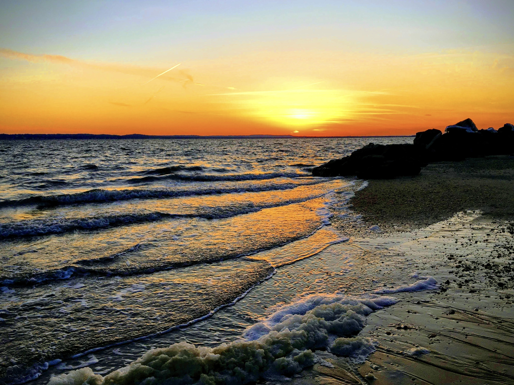

Advocating for America's national parks can be simple. Contact your local representative and share your national park story. Did you have a meaningful experience in a park? Maybe a ranger went above and beyond during a guided hike, or you discovered a new story or piece of history. What made that moment special? Or perhaps you noticed areas that could use more care and resources. Maybe road closure, a broken water fountain, or an unstaffed visitor center. Did you run into any issues, and if so, how did it affect your visit?
Stories like these help show how much our national parks matter. As a constituent in your representative's district, you can ask them to support the reauthorization of the Great American Outdoors Act so we can continue to make memories in our parks for generations to come.
| Step | Action |
|---|---|
| ONE | Find your representative at ballotpedia.org |
| TWO | Choose your contact method. Make a phone call, send an email, or schedule to meet in person. |
| THREE | Explain why national parks are important to you, and why you believe they should continue to receive funding to address deferred maintenance from the Great American Outdoor Act. |
Update March 2026:
While the Great American Outdoors Act has expired, there is still hope and still much you can do.
Together we can resist censorship, combat climate destruction, and support the workers and communities who depend on the institution that is our national parks and public lands.
Reach out to your representative to share what parks, nature, biodiversity, history, science, and freedom of information mean to you, or check out The National Park Conservation Association to learn what else you can do.
How Can I Make a Difference?
5 Things You Can Do Now to Stop Erasure at Our Parks